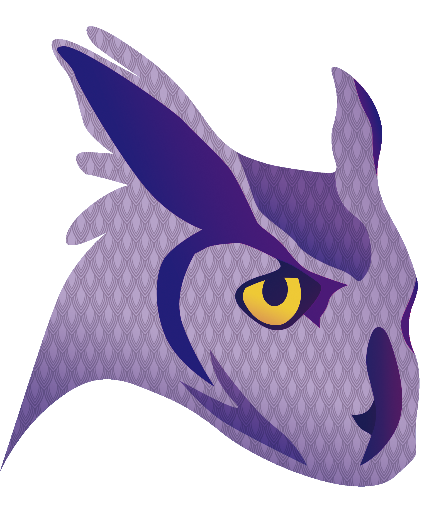
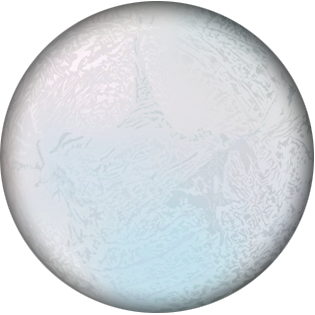

 |
Athena EnvironmentAthena is a PlayStation 2 JavaScript environment that makes the process of creating games and homebrew applications extremely easy. It uses ECMAScript 2023 specification, a lot of customized modules and optimizations to fit hardware needs. |
|---|---|
 |
EnceladusEnceladus is a PlayStation 2 Lua environment that makes the process of creating basic games and homebrew applications extremely easy. It uses Lua 5.4, draw, image, sound, control and system modules to give an interface for software creation. |